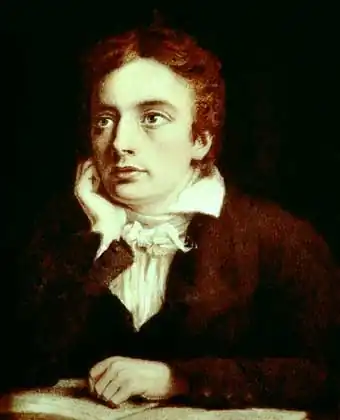
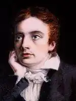

КІТС, Джон (Keats, John — 31.10.1795, Лондон — 23.02. 1821, Рим) — англійський поет.Батько Кітса, успішний власник платної стайні, у 1804 р. розбився, впавши з коня. Мати вдруге вийшла заміж; 1810 р. вона померла від сухот, які гнітили і її дітей. Четверо синів, з яких Джон був найстаршим, і сестра зосталися під опікою бабусі Аліси Дженнінгс. Сонет "Як голуб з танучої пітьми..." ("As from the darkening gloom a silver dove..."), написаний з нагоди її смерті у 1814 p., вважається одним з перших віршів Кітса.
У 1803 p. Кітс почав навчатися у приватній школі у містечку Енфілд, що на північ від Лондона. У 1811 р. в розташованому неподалік Едмонтоні, де родина проживала з 1805 p., він найнявся учнем до хірурга та фармацевта, щоби з 1815 р. продовжити вивчення медицини у лондонському госпіталі Гая. Наступного року він склав іспит, що давав право займатися медичною практикою, однак двома місяцями раніше — 5 травня — в газеті Лі Ґанта "Ігземінер" з'явився його перший опублікований вірш — "Сонет про самотність" ("О Solitude"). Кітс відмовився від медичної кар'єри і присвятив себе літературі.
У назвах багатьох своїх віршів Кітс прямо вказував на поетичний привід для натхнення: Гомер, Дж. Чосер, В. Шекспір, Е. Спенсер, Р. Берне... Ще більша кількість літературних зв'язків мається на увазі та легко поновлюється. Це характерно для його манери, що виграє відблисками поетичних асоціацій, незвично глибоко та свідомо зануреної у матерію поетичного слова. Упродовж усієї його короткотривалої творчості Кітса супроводить естетична ідея — думка про Красу, віднаходжувану у природі, що відкривається для поезії. Чи не найранішим віршем Кітса, що дійшли до нас, є "Наслідування Спенсера". У романтичну епоху заново відкривають цього класика XVI ст. До Кітса спенсеровою строфою скористався Р. Берне ("Суботній вечір селянина") і з надзвичайним успіхом Дж. Н. Г. Байрон у "Паломництві Чайлд-Гарольда". Ця строфічна форма з плином часу стала вмістищем багатьох асоціацій, пов'язаних загалом із творчістю її винахідника, котрий понад усе запам'ятався як майстер поетичної стилізації: куртуазно-рицарської у "Королеві фей", пасторальної — у "Календарі пастуха". Кітс теж любить відображене у слові світло. Видимий чи уявний предмет будить у ньому поетичні спомини, відлунює численними образними асоціаціями. Сліди початкового захоплення Спенсером залишаться у поезії Кітса. Вони проявляться у стилі чи то безпосереднім запозиченням "спенсеризмів", чи то загальним ледь архаїзованим забарвленням вірша, який своєю яскравістю нагадує ілюміновану середньовічну мініатюру та підказує, що за позірною видимістю слід уміти розрізняти щось більше, що мається на увазі та змушує вгадувати в образі алегорію. А то й — спробою написати власну поему на рицарський сюжет чи баладу, схоже до "La Belle Dame sans Merci", якою вже напередодні своєї смертельної хвороби Кітс трагічно виразив відчуття кохання, що поглинається смертю. Однак Спенсер був для Кітсом лише частиною його загального захоплення епохою Відродження, що знайшло свій вияв у культі Шекспіра і захопленням сонетною формою. Вона в цей час була заново відкрита для англійської поезії. У 1811 р. В. Вордсворт написав сонет на тему "Не зневажай сонета, критик..." Строга досконалість цієї форми відповідала словесній пластиці К. Він відчував образ як простір, який належить замкнути, обмежити, але й, замкнутий, він — безмежний. Море залишається морем, коли його хвилі б'ють у відточені грані сонета: "Невгавно шепче в голому камінні/І дметься, топить тисячі печер,/Аж поки їм, володарка химер,/Лишить Геката древні шуми-тіні" {"Сонет про море", — "On the Sea" пер. В.Мисика). У своїх кращих сонетах Кітс простий — і в образі, і в самій тональності. Про прекрасне він говорить цілком природно, віднаходячи його всюди: і в літньому сюрчанні коника, і в запічній пісні цвіркуна, і в миттєвій приголомшеності людини, яка переживає минущість свого буття на березі океану вічності. Хвилі підхоплюють, відносять — кинуто останній погляд на те, що колись було життям, із його мрією про кохання, про славу... ("Як здумаю, що можу відійти...", пер. В.Мисика). Мрії минаються з людиною, прекрасне ж зостається. Краса нетлінна і тому рятівна для того, хто нею запричастився. Таку естетичну віру сповідує Кітс. Вона змушувала підозрювати у Кітса прибічника "чистого мистецтва", що стало підґрунтям упередженості щодо нього в колишньому СРСР, надовго затримавши знайомство з його поезією. Така думка утримувалася аж до з'яви книги А. Єлістратової "Спадщина англійського романтизму і сучасність" (1960), де було сказано про те, що в розумінні Кітса естетична ідея не веде від світу, не передбачає протиставлення дійсності та прекрасного. Саме найкращі сонети й оди Кітса засвідчують це зі значно більшою повнотою та переконливістю, аніж його ранні волелюбні вірші. Політичні мотиви у творчості Кітса виникли під впливом Лі Ганта, відомого літератора, поета, журналіста, котрий провів два роки у в'язниці за нападки на принца-регента. Його звільнення К. привітав сонетом 2 лютого 1815 р. їх пов'язувала і схожість поетичних смаків. Гант теж цінував у поезії багатство пам'яті, колористичне відтворення минулого, про яке оповідав легкою, розмовною мовою, виправдовуючи літературне прізвисько "кокні" (назва лондонського діалекту). Це прізвисько закріпилося за групою лондонських романтиків, які згуртувалися довкола нього. До неї пристав і Кітс, за життя визнаний, по суті, лише цією жменькою друзів і жорстоко критикований її численними супротивниками. Декілька сонетів Кітс написав під час поетичного турніру, в якому брав участь і Лі Гант. Серед них "Про коника та цвіркуна" ("On the Grasshopper and Cricket"), "До Нілу" ("То the Nile"). Однак до 1817 р. вплив Ганта почав слабнути і настало розхолодження, особливо після того, коли Кітс, не дослухавшись до його заперечень супроти великої поеми, почав працювати над "Ендіміоном". Виправдовуючи свій задум, він писав у листі до Б. Бейлі:"...хіба шанувальникам поезії не більше до душі певний закуток, де вони можуть блукати та вибирати місцини собі до смаку і де образів так багато, що деякі з них забуваються і здаються новими при повторному читанні, й де влітку можна промандрувати цілий тиждень? [...] До того ж, велика поема — пробний камінь для вигадки, а вигадку я вважаю провідною зіркою поезії, фантазію — вітрилами, а уяву — стерном" (8.10.1817). Кітс рано, буквально з перших кроків, знайшов свій ліричний жанр — сонет. Але тільки цим жанром він не міг вдовольнитися. Опанувавши мистецтво вміщувати безмірність простору у строгу обмеженість малої форми, він настільки ж рано відчув іншу потребу — давши волю уяві, змальовувати світ, тільки графічною моделлю якого міг бути сонет. Живопис потребував поеми. Стосовно жодного іншого жанру Кітс не бував таким наполегливим, упертим і водночас невдоволеним собою. Не встигнувши дописати чергову поему чи частіше кидаючи її на півдорозі, він уже відчував невдоволеність. Стиль не знайдений, прийоми оповіді наївні, в кращому разі вдаються окремі рядки, — зізнавався він друзям. Ранні начерки так і зосталися начерками, фрагментами, вступом до поеми. Першим завершеним твором у цьому жанрі була поема про поезію — "Сон і Поезія" ("Sleep and Poetry", 1816). К. поставив поруч два найважливіші для нього поняття, у їхньому сусідстві відкриваючи для себе і природу поетичного натхнення, і природу поезії, подібної до наслання, осяяння, яке в подобі інобуття здатне розкривати потаємну сутність самого життя. Тут Кітс гостро висловився проти насильства правил чи розуму, назвавши своїм противником Н. Буало (рядки 181—206). Це місце назавжди зіпсувало його стосунки з Байроном, котрий угледів тут натяк не лише на французького теоретика, а й на А. Поупа, в поезії котрого, всупереч романтичному смакові, Байрон віднаходив зразок точно висловленої думки та суспільного темпераменту. Що ж стосується ставлення самого Кітса до Байрона, то воно було різним. Судячи з раннього сонета "До Байрона", спочатку Кітс ставився захоплено до старшого сучасника, котрий вражав уяву контрастами своєї душі, різкістю переходів від мороку до світла. Однак через чотири роки в листі до брата Джорджа та його дружини (14.02. — 3.05.1819) він уже не знаходить давньої значущості в особистості Байрона, особливо, коли ставить його поряд зі своїм кумиром — Шекспіром: "Він описує те, що бачить; я описую те, що уявляю". Цінуючи досвід, знання життя, Кітс не вважає їх достатніми для поезії, для котрої згубний як надмір описовості, так і надмір розмисловості. Утім, він добре знав і зворотну небезпеку — надмірну поетичність, яку нерідко знаходив у сучасній поезії. Кітс цінував відкриття Вордсворта, розуміючи, як далеко в "темні галереї" людської природи і світу заводить його поема "Абатство Тінтерн" (лист до Дж.Г. Рейнолдса, 3.05.1818), але іронізує над його відходом від природності як у житті ("лорд Вордсворт"), так і у віршах. Маючи на увазі його удавану афектацію, Кітс написав пародійний сонет "Дім скорботи" (автор містер Скотт...). Цей сонет датується квітнем 1819 p., тобто входить до числа останніх творів Кітса. За значенням, за розгорнутістю аргументації його, звісно, не можна ставити в один шерег зі знаменитими антиромантичними поемами-маніфестами Байрона, і все ж у цьому сонеті — не менша переконаність позиції, неприйняття певних романтичних рис мислення (названі Скотт, Вордсворт, Колрідж). Байрону бракувало в сучасній поезії дохідливої думки та діяльної особистості. Байрон шукав свою традицію у XVIII ст., а Кітс — в епосі Відродження. У березні 1817 р. вийшла друком перша прижиттєва збірка Кітса — "Вірші"("Poems"). Це підсумок і одночасно — потреба нового кроку, яку Кітс завжди усвідомлював особливо гостро, ніби передчуваючи, як мало йому залишилося часу. Вже наступного місяця він узявся до праці над поемою "Ендіміон", яку завершив у листопаді. Це найбільший його твір: чотири пісні загальним обсягом близько чотирьох тисяч рядків. У її задумі — замирення краси з дійсністю, життя з мрією, натхнення з гармонією. Канва сюжету поеми — відомий міф про кохання богині Артеміди до прекрасного юнака Ендіміона, котрому вона являлася в його снах і котрого Зевс, на його прохання, приспав назавжди, аби сон тривав вічно.